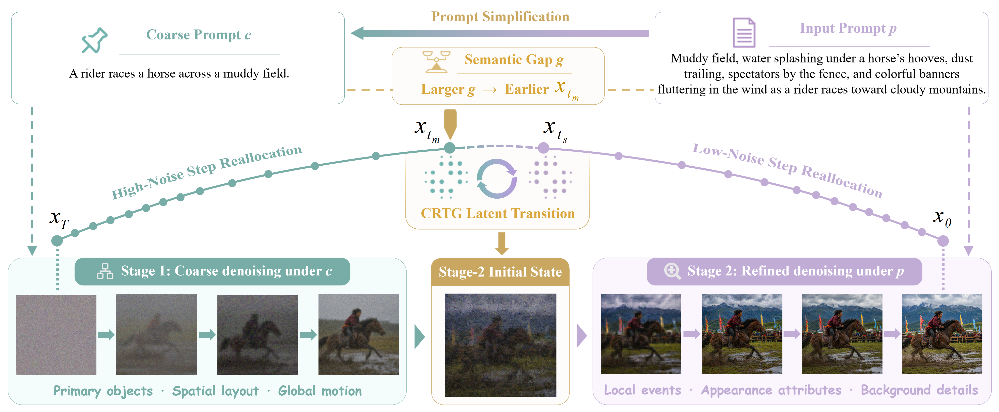
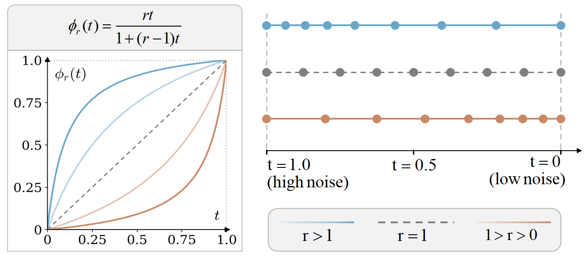

The Right Semantics at the Right Time: Adaptive Inference for Semantic-Faithful Video Diffusion
A two-stage video inference framework that aligns semantic granularity with the denoising trajectory through prompt-adaptive switching, noise-aware sampling reallocation, and a stable coarse-to-refined latent transition.
Method Overview

Place method overview image here assets/images/overview.png
The framework begins by deriving a coarse condition from the input prompt, retaining
the primary objects, spatial layout, and global motion needed to organize the scene.
The semantic difference between the coarse and full prompts determines how long this
formation stage should last: prompts containing more additional fine-grained content
switch earlier so that more of the remaining trajectory can respond to it. Early
sampling emphasizes the high-noise portion of the trajectory, where global organization
is still flexible. Before the full prompt takes over, CRTG converts the intermediate
latent into a stable state compatible with continued fine-grained denoising. The second
stage then emphasizes low-noise updates to realize local events, appearance attributes,
and background details without discarding the coarse configuration already established.
ⅠCoarse-to-Fine Two-Stage Generation
input prompt p
→
coarse prompt c
Instead of applying the complete prompt uniformly throughout denoising, the method
assigns complementary responsibilities to two text conditions. A coarse proxy distilled
from the input prompt guides the early formation of primary objects, spatial layout, and
global motion. The original prompt remains the final semantic target and is introduced
later to realize local events, appearance attributes, background details, and other
fine-grained constraints.
ⅡSemantic-Gap-Adaptive Prompt Scheduling
g = 1 − cos(E(c), E(p))
The transition is determined separately for each prompt rather than fixed globally.
The semantic gap estimates how much information the full prompt adds beyond the coarse
proxy. A larger gap moves the switch earlier and reserves more subsequent updates for
the additional constraints; a smaller gap keeps coarse semantic formation active for
longer. The transition range is bounded so that both stages retain sufficient sampling
support.
ⅣCoarse-to-Refined Transition Guidance
When the condition changes, the current latent still reflects the trajectory formed
under the coarse prompt. Directly continuing with the full prompt can create a mismatch
between that latent state and the remaining denoising process. CRTG combines the
coarse-conditioned direction with the semantic increment introduced by the full prompt
to construct a transition direction suited to the next stage.
dcrtg = dc + λcrtg(dp − dc)
The resulting transition latent serves as a stable starting point for fine-grained
sampling. It retains the primary objects, layout, and global motion already formed while
placing the latent in a state where the remaining updates can still express local events,
appearance attributes, and background details. This coordinated transition reduces the
instability and visual collapse that can follow an abrupt prompt switch.
ⅢSampling-Budget Reallocation
The method reallocates the existing sampling budget instead of adding more denoising
steps. During coarse formation, more updates are placed in the high-noise region, where
primary objects, spatial layout, and global motion remain easier to reshape. During
fine-grained refinement, more updates are placed in the low-noise region, where local
interactions, appearance, and background details become visible. The transformation
preserves the number and order of timesteps, giving each semantic stage denser support
in the noise region where it is most effective without increasing the total inference
cost.
high-noise emphasis
→
low-noise emphasis
φr(t) = rt / (1 + (r − 1)t)

Place sampling reallocation figure here assets/images/Sample_Reallocation.png
Baseline vs. Ours
Within each backbone, conventional inference and the proposed staged inference are compared under the same prompt across six semantic criteria. Overall win rates reach 53.6% on Wan2.2-5B and 58.0% on CogVideoX-5B.
Wan2.2-5B
01
Primary objects
Evaluates whether the prompt-specified primary entities are correctly realized.
Prompt: A green sea turtle swims over coral in a tropical reef, where branching coral rises below its shell, striped reef fish pass beside it, and sun rays filter through clear blue water.
BaselineOurs
02
Spatial layout
Evaluates the relative arrangement and scene configuration specified by the prompt.
Prompt:A river floods over its banks beside a rural road, carrying muddy water and grass clumps past fence posts and a half-submerged mailbox.
BaselineOurs
03
Global motion
Evaluates the principal motion pattern and large-scale temporal evolution.
Prompt: A person in a yellow ski suit skisfrom the top of a slope to the bottom at a large ski resort. There are many other people on the slopes, the weather is sunny, and the sun is shining.
BaselineOurs
04
Local events
Evaluates localized interactions and event-level changes.
Prompt:White milk swirls into black coffee inside a clear cup, forming curved patterns that fade into light brown liquid.
BaselineOurs
05
Appearance attributes
Evaluates prompt-specified visual properties such as color, material, shape, and texture.
Prompt: A lighthouse stands on the ocean shore, with a tall white tower, rocky coast, waves breaking below, and open sea stretching behind it.
BaselineOurs
06
Background details
Evaluates contextual elements and scene details beyond the primary objects.
Prompt: A black dog runs happily across a yellow grassy field, with a clear blue sky and some trees in the background.
BaselineOurs
CogVideoX-5B
01
Primary objects
Evaluates whether the prompt-specified primary entities are correctly realized.
Prompt:A house on the seashore stands near waves, with weathered walls, a sandy path, sea foam at the edge, and salt-stained surfaces facing the water.
BaselineOurs
02
Spatial layout
Evaluates the relative arrangement and scene configuration specified by the prompt.
Prompt: An aerial view of a luxurious house with a pool shows blue water, a wide terrace, garden paths, parked cars, and trimmed lawns around the home.
BaselineOurs
03
Global motion
Evaluates the principal motion pattern and large-scale temporal evolution.
Prompt: A chef cuts sushi rolls on a board, pressing a knife through seaweed and rice while neatly sliced pieces line up beside the blade.
BaselineOurs
04
Local events
Evaluates localized interactions and event-level changes.
Prompt: Firewood burns in a dark room, with orange flames, glowing embers, smoke, and flickering light on nearby brick.
BaselineOurs
05
Appearance attributes
Evaluates prompt-specified visual properties such as color, material, shape, and texture.
Prompt: A frozen river stretches across the frame, with pale ice, dark cracks, snow along the banks, and bare trees beside it.
BaselineOurs
06
Background details
Evaluates contextual elements and scene details beyond the primary objects.
Prompt: A lemur eats grass leaves near low branches, holding the leaves with small hands while its striped tail curls behind it and sunlight falls through the foliage.
BaselineOurs
More Qualitative Results
Additional within-backbone comparisons across diverse content categories, using conventional inference and the same staged inference procedure.
Wan2.2-5B · Additional Comparisons
Prompt: A red fox leaps over a stream in an autumn birch grove, where fallen orange leaves fly from the bank, wet stones border the water, and thin white trunks stand behind the fox.
BaselineOurs
Prompt: A orange clownfish weaves through anemone in a coral lagoon, where soft anemone tentacles sway around its body, small particles drift in the water, and purple coral heads sit nearby.
BaselineOurs
Prompt: A tall sunflower with a heavy yellow head slowly turns in an open farm field, with green leaves twisting along the stem and rows of other sunflowers behind it.
BaselineOurs
Prompt: Orange juice splashes into a tall glass, forming bubbles at the top and droplets on the clear rim.
BaselineOurs
Prompt: A yellow butterfly flies between flowers in an alpine meadow, where purple lupines sway below it, patches of white snow remain on distant slopes, and grass stems bend in the wind.
BaselineOurs
Prompt: A red squirrel runs along a log in a temperate forest floor, where moss covers the fallen trunk, acorns scatter near its paws, and ferns grow around the shaded clearing.
BaselineOurs
Prompt: A baker in a white apron kneads a round dough ball on a floured wooden table, with copper bowls and stacked proofing baskets behind the counter.
BaselineOurs
Prompt: A scuba diver enters a coral reef, releasing bubbles while yellow reef fish pass between branching coral and a blue coral wall rises nearby.
BaselineOurs
CogVideoX-5B · Additional Comparisons
Prompt: A seagull walks along the shore, stepping over wet sand while small waves roll behind it and shell fragments dot the beach.
BaselineOurs
Prompt: A colorful butterfly perches on a flower bud, with patterned wings folded above the petals, green stems around it, and other buds blurred behind.
BaselineOurs
Prompt: People applaud a kids' performance, clapping in rows of seats while children stand on a small stage under bright lights.
BaselineOurs
Prompt: White flowers bloom on a tree in close up, with small petals, yellow centers, thin branches, and green leaves behind them.
BaselineOurs
Prompt: Tree leaves change color during autumn, with green, yellow, and orange leaves mixed across branches and fallen leaves covering the ground.
BaselineOurs
Prompt: A curious cat sits indoors and looks around, with bright eyes, upright ears, a chair and rug behind it, and light from a window crossing the floor.
BaselineOurs
Prompt: A shark swims through open sea, with a gray body, pointed snout, dorsal fin cutting through blue water, and small fish in the distance.
BaselineOurs
Prompt: A cherry tree blooms with pale flowers, with clusters of blossoms along dark branches and petals scattered on the ground.
BaselineOurs
Ablation Study
Visual sensitivity analysis isolates the effects of Sampling-Budget Reallocation, CRTG, timestep concentration, and the timing of the condition transition from c to p.
Full framework
Semantic-gap-adaptive staged inference
Component removal
w/o Sampling-Budget Reallocation
Component removal
w/o Coarse-to-Refined Transition Guidance
Schedule sensitivity
Sampling steps overly concentrated in the high-noise region
Schedule sensitivity
Sampling steps overly concentrated in the low-noise region
Transition sensitivity
Condition transition from c to p too early
Transition sensitivity
Condition transition from c to p too late
Resources
Code and supplementary visual results for the proposed staged inference framework.